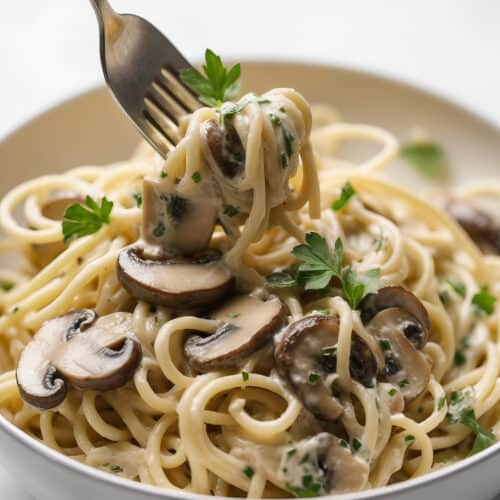

Creamy Mushroom Pasta

Description
This Creamy Mushroom Pasta speaks for itself. A slippery tangle of pasta bathed in a creamy parmesan sauce loaded with buttery garlic mushrooms, it's simple, quick, and utterly luxurious!
Ingredients
- 160g/6oz fettucine
- 2 tbsp (30g) unsalted butter
- 300g/10oz mushrooms
- 2 garlic cloves
- 1/2 cup (125 ml) white wine
- 1/2 cup (125 ml) chicken broth/stock
- 3/4 cup (185 ml) cream
- 1/3 cup (30g) parmesan
- 1/2 tsp salt and pepper
SERVING:
Steps
- Cook pasta in salted water for 1 minute less than time per packet (start this mid mushroom cook). Just before draining, scoop out 1 cup cooking water, then drain.
- Melt butter and heat oil in a large skillet over high heat.
- Add mushrooms and cook, stirring regularly. When they start to sweat, add a pinch of salt and pepper.
- When pretty golden (about 4 - 5 minutes), add garlic and cook until garlic is golden and mushroom is golden.
- Stand back and add wine (it will be steamy!!), stir, scraping the bottom of the skillet. Simmer rapidly until wine is mostly evaporated and winey smell is gone.
- Add broth, cream, parmesan, salt and pepper. Stir to dissolve parmesan and simmer for 2 minutes, stirring regularly.
- Transfer pasta into sauce, toss for 1 - 2 minutes until sauce thickens and coats pasta. If sauce gets too thick (rather than slick, see video), add a splash of reserved pasta cooking water.
- Garnish with parsley and serve immediately with extra parmesan!